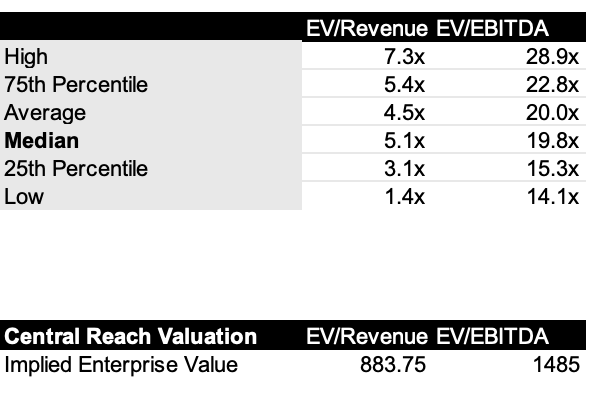
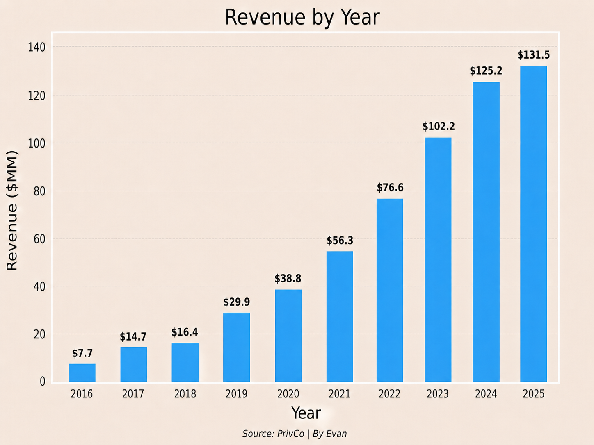
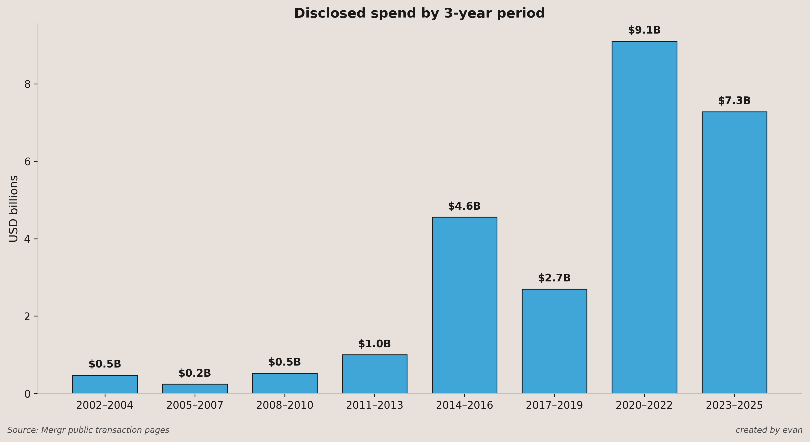
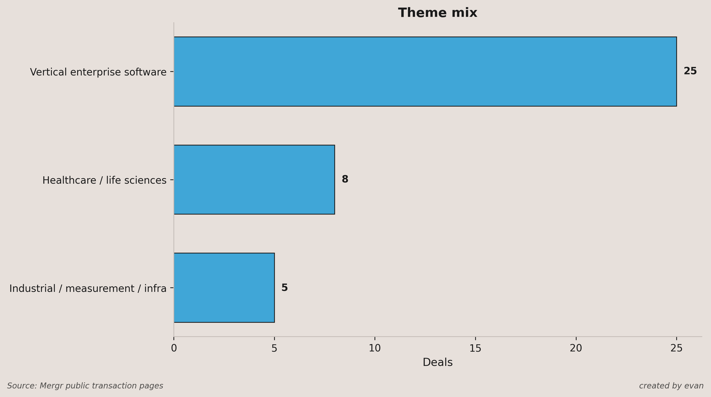

Roper / CentralReach
Recently I saw an acquisition between two technology companies that interested me. Roper Technologies agreed to acquire CentralReach from Insight Partners for a headline purchase of $1.85 billion, or approximately $1.65 billion net of a $200 million tax benefit.
William Blair acted as exclusive financial advisor for CentralReach LLC, the Insight Partners portfolio company, making this a sponsor-backed sell-side healthcare technology transaction. CentralReach operates in the domain of applied behavior analysis therapy. Their software helps with session data collection, progress tracking, scheduling, and billing. It is used by 200,000 professionals.
On the other hand, Roper Technologies is a constituent of the S&P 500 and operates in niche markets, developing vertical software. Insight is a global software investor with $90 billion AUM. Insight leans towards growth software investing as opposed to the classic legacy strong cash flow buyout.
At 9.4x revenue, the purchase multiple is high, but the valuation is easier to defend given 20%+ organic revenue and EBITDA growth is expected and a 43% EBITDA margin. According to Capstone Partners, typical Healthcare IT M&A tend to be around 6.1x EV/Revenue. I’m interested to see whether Roper’s implied purchase multiples are comparable to public companies.
The goal of this analysis is to see whether the $1.65 billion price reflects an actual premium relative to comparable vertical software and healthcare IT assets, and whether that premium is justified by growth, margins, and market position.
For the comps analysis, I selected six public vertical workflow software companies with exposure to healthcare. The only exception is Tyler Technologies, which has similar mission critical vertical workflow software for public sector areas like public schools and courts. Using these 6 vertical workflow software companies, I built out a comps analysis, which led to a median EV/Revenue of 5.1x and median EV/EBITDA of 19.8x.

Using these multiples, the implied enterprise value for CentralReach is $883 million on revenue and $1.485 billion on EBITDA. On revenue, CentralReach appears expensive versus public comps, but on EBITDA the valuation is much closer. CentralReach is unusually profitable for a growth software asset. CentralReach already clears the rule of 40 before giving credit to its forward growth, since its implied EBITDA margin is already 43%.
PrivCo revenue data suggests CentralReach’s revenue growth slowed to approximately 5% YoY in 2025, which appears inconsistent with Roper’s expectation for 20%+ organic revenue and EBITDA growth. I do not think this necessarily breaks the deal thesis, but it is the main diligence question.

I am also not surprised at all that Roper targeted CentralReach. Roper has dramatically increased acquisition spend over the past decade, and CentralReach fits their target of vertical software. More than two-thirds of their acquisitions since 2002 have been vertical software companies. Finally, CentralReach is workflow heavy. It likely has a low churn rate because switching systems would require providers to migrate clinical data, billing workflows, and scheduling processes.


While the acquisition looks expensive on revenue, it is more defensible on EBITDA and fit because CentralReach combines niche market leadership, workflow depth, and great margins.